Visual Page Editor
There are now an a section in "Page Design Options" for Visual Page Editor that allows user to configure values to substitute with when the editor encounter an EL expression.
This is very usefull if you have custom skins or image resources that you refer to by EL which value are normally only known at runtime. By setting up the values in the Page Design Options the visual editor will "resolve" the EL and be able to locate the resources and provide a closer to real life visualization.
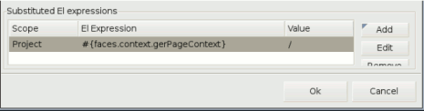
The variables can be set at Project, folder and page level allowing for flexible overrides in custom project layouts.
CSS Editor
An CSS Editor was added for editing inline styles for elements that has a style attribute. It is started by selecting an element in VPE and then via the properties view find the style attribute and click ... to start the dialog.
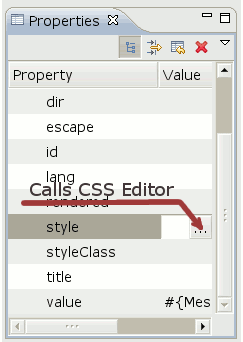
The editor dialog has four tabs where CSS properties for text, color, position and others can be specified and adjusted. The quick edit tab shows just the edited properties, removing the need to browse multiple tabs to adjust an existing styling.
The bottom of dialog a preview is continously updated while the styling are adjusted.
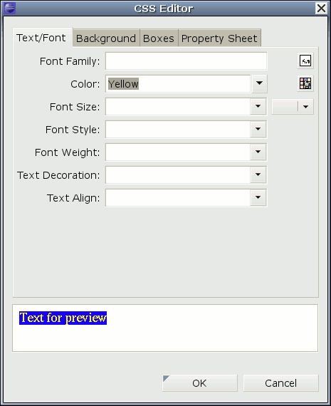
Update of visual editor preview on change source code was made in separate thread, and now it does not cause eclipse to 'sleep' when we edit something in source part of visual editor for large files.
The visual editor now has a visible caret for editing and we also made the update mechanism run in the background so Eclipse should no longer 'pause' when updating the visual preview plus we started waiting for the user to stop typing before actually doing the update.
The preview also now obeys the used doctype in the HTML source to provide better and more consistent preview via Mozilla.
All-in-all improvements that should make the editing process faster and give a better editing flow.
General
When opening Visual Page Editor on Vista users were previously presented with 2 security check dialogs caused by regedit being used to check for XULRunner installations. This check is now removed and Vista users should have two less UAC dialogs to worry about.
We did another round of speed improvements to the Visual Page Editor and now typing directly in the visual part is more fluent.
Visual Page Editor
There is now a CSS class wizard that can be used to add or edit CSS styles in existing CSS style files.
This wizard is also utilized in the Visual Page Editor to allow editing of tags external styles directly instead.
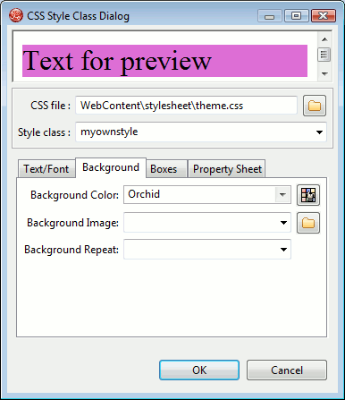
The visual page editor now has a option to show non-visual tags.

When enabled a small grey box with the non-visual tags will be drawn in the visual part to more easily see where the boundaries are and to provide a way to select them more easily by just clicking.

It have always been able to setup a template for unknown tags by right clicking them in the Visual Page Editor:
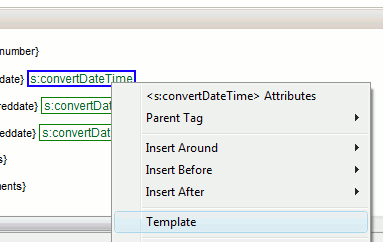
We have improved the dialog for defining the template to allow you to select which html tag to use and instead of restricted styling options you can know use CSS to define the style.
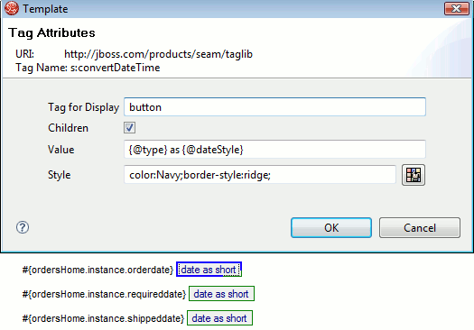
Visual Page Editor has a preference for showing the raw EL or render the translated string for resource bundles. In previous versions there were problems with rendering the resource bundles when the content came from nested includes. That is now fixed making it available at all levels.
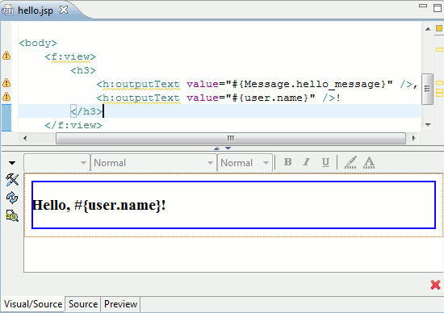
Richfaces tags <rich:insert> and <aj4:include> now has OpenOn support
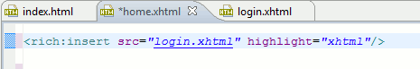
This means you can use F3 or Ctrl+Click on the src attribute and navigate directly to the resource.
EL code completion have been enabled for more JSF Core tags.

Drag'n'Drop of components now show a caret to indicate where the component will be dropped.
Richfaces tags now have unique icons in the JBoss Tools palette instead of all using the default tag icon.
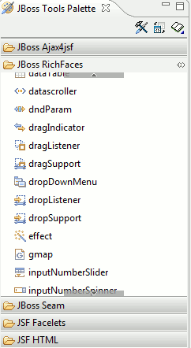
rich:hotKey, rich:ajaxValidator, rich:graphValidator, rich:beanValidator, rich:extendedDataTable is now supported in the Visual Page Editor.
We also added initial support for some new tags from JSF 2: h:body, h:head, h:outputscript, h:outputstyle
General
Richfaces 3.2 is now fully supported in code completion and visual page editor.
Code completion now has icons illustrating what they are from. Currently we separate between resource bundles, seam and jsf components.
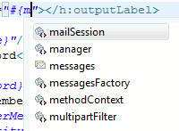
General
Richfaces 3.3 is now supported in code completion and visual page editor.
The palette preferences now have a 'Restore defaults' allowing you to pick up any new palette changes/additions.
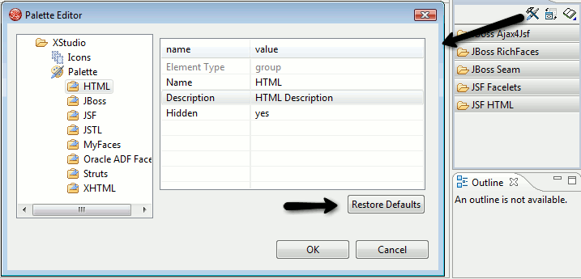
The dialog for Page Design Options now uses tab's instead of one big cluttered dialog plus it and the related dialogs are now resizable.
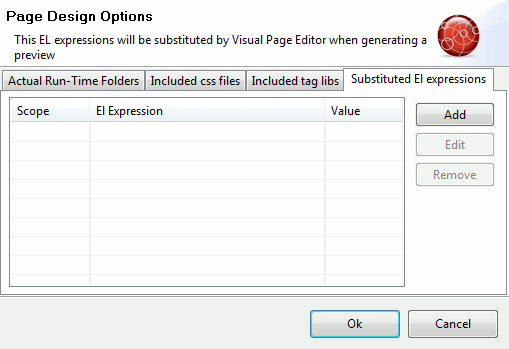
The performance of the New CSS dialog have been improved so there no longer is a significant lag when editing certain attributes in the dialog.
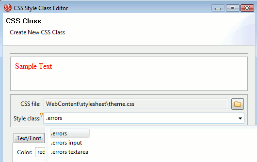
The "Insert around", "Insert before", "Insert after", "Replace With" operations are now available in the source editor of Visual Page Editor. Before they were only available in the visual part.
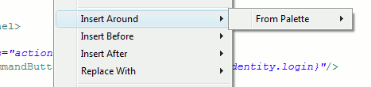
The source editor in Visual Page Editor now supports code folding. It is enabled by right clicking in the margin and selecting the Folding menu.
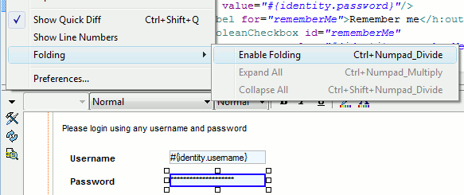
When enabled all HTML and XHTML tags can be folded/unfolded by clicking on the -/+ signs in the margin. Note, this support goes beyound what the default XML and HTML editor in Eclipse which only support HTML tags and not namespace prefixed XML tags.
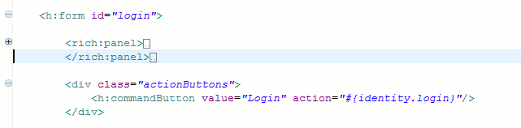
Completion
Managed beans listed in faces-config.xml in jar's are now being loaded and available in code completion.
Templates
rich:editor and a4j:queue is now supported in the visual editor.